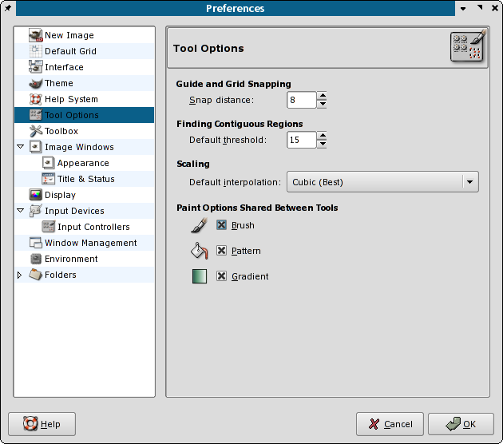
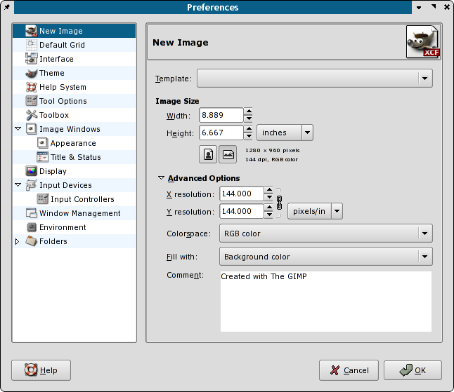
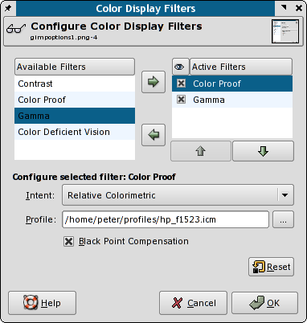

There is not much to say about the best image application for Linux. GIMP 2.x has too many improvements to list.
However, setting up GIMP for print work with Scribus requires some adjustments to the defaults as shown below:
fontconfig, so finding the fonts on your system is much less of an issue. Text can be kept in a separate layer to ease editing and correcting. In the 1.2.x versions certain type of handling were difficult, but there is little to complain about now. It is a pleasure to use the new text controls. In addition, there is also a separate freetype plug-in for GIMP, which allows you to manipulate type in the same means Scribus and Inkscape do. Recommended. You can find this on the ftp.gimp.org site.|  |
Like most image editors, GIMP's defaults are setup primarily for web site images, meaning waaaay too little resolution for print. So first thing, set the defaults to a minimum of 144 DPI in resolution. Remember using these higher resolutions will result in much larger size files, so you might also need to adjust maximum settings for memory usage as well in GIMP preferences.
|  |
The other notable addition is the beginnings of some very basic color managed "soft proofs" of your images. This is available via littlecms also used by Scribus. Accessing the controls is simple via View > Display Filters. This can be considered experimental at the moment, but expect a more complete color managed view in GIMP 2.4. The most recent development 2.3.x versions of GIMP show dramatically more color management capabilities.
|  |